Mon Portefeuille de Compétences
Une analyse approfondie de mon parcours en BUT Informatique. Retrouvez l'évaluation détaillée de mes acquis par année.
C1 : Réaliser un développement d'application
Bases de la programmation, Conception, Tests
| Critères | Non Acquis | En Cours | Acquis |
|---|---|---|---|
| AC 1 : Implémenter des conceptions simples | Erreurs d'exécution, absence de commentaires et d’indentation, nommage peu représentatif, boucles infinies, objectifs non atteints. | Présence de boucles ou instructions inutiles, variables non utilisées, structure de code perfectible, langage mal adapté. |
Niveau Atteint Code fonctionnel, commenté, bien structuré, avec bonne vitesse d’exécution et consommation de ressources maîtrisée. |
| AC 2 : Élaborer des conceptions simples | Compréhension incomplète des besoins et contraintes, difficultés avec les diagrammes, conception partiellement fonctionnelle. | Besoin compris mais modélisation peu claire ou difficile à lire, informations incomplètes recueillies auprès du client. |
Niveau Atteint Analyse complète des besoins et contraintes, modélisation claire (schémas, UML) et choix de conception expliqués. |
| AC 3 : Faire des essais et évaluer les résultats | Tests non reliés aux spécifications, pas de comparaison résultats obtenus/attendus, écarts non expliqués. | Tests partiels, problèmes fonctionnels identifiés mais comportements imprévus restants, exigences techniques mal couvertes. |
Niveau Atteint Tests construits à partir des spécifications, écarts compris et corrigés, résultats présentés de manière claire. |
| AC 4 : Développer des interfaces utilisateurs | Navigation incomplète, boutons non fonctionnels, intitulés inadaptés, charte graphique non respectée, application instable. | Interface utilisable mais peu intuitive, guidage limité, menus trop imbriqués, feedbacks peu clairs. |
Niveau Atteint Interface claire, ergonomique, navigable par un utilisateur externe, charte graphique lisible et critères d’ergonomie respectés. |
Application Morpion : Ce TP de développement d’une application Morpion avec JavaFX a été particulièrement enrichissant et motivant. Travailler en autonomie sur un projet concret et interactif m’a permis de mettre en pratique mes compétences en programmation orientée objet et en interface graphique. C’était à la fois amusant et formateur.
TDD Potterbook : Le projet PotterBook m’a permis de maîtriser le TDD en Java en développant un code fiable et structuré. Écrire les tests avant le code m’a aidé à mieux comprendre les règles métier et à assurer la qualité dès le départ.
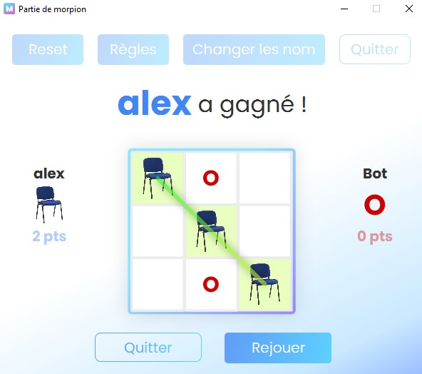
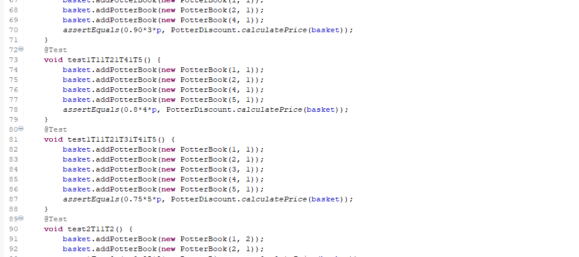
C2 : Optimiser des applications
Algorithmique, Complexité, Maths
| Critères | Non Acquis | En Cours | Acquis |
|---|---|---|---|
| AC 1 : Analyser un problème avec méthode | Utilisation insuffisante des concepts algorithmiques, absence de décomposition claire du problème. | Problème identifié mais analyse incomplète ou imprécise sur certaines parties. |
Niveau Atteint Identification précise des éléments clés, choix de structures de données et d’algorithmes adaptés. |
| AC 2 : Comparer des algorithmes classiques | Aucun algorithme réellement testé, résultats incohérents, absence de critères de comparaison. | Critères de comparaison mal définis ou peu exploités, analyse superficielle. |
Niveau Atteint Justification sur des critères mesurables, tests cohérents, complexité et performances documentées. |
| AC 3 : Formaliser et mettre en œuvre des outils mathématiques | Outils mathématiques mal choisis ou mal appliqués, erreurs de calcul fréquentes. |
En Cours Démarche partielle, étapes peu détaillées, présentation perfectible. |
Outils utilisés à bon escient, formalisation précise et résultats validés par des tests. |
SAE 2.02 – Exploration algorithmique : Ce projet en Java m’a permis d’approfondir mes connaissances en algorithmique, notamment à travers l’implémentation des algorithmes de parcours de graphe comme DFS, BFS et A*. En les comparant, j’ai mieux compris leurs avantages et limites.
TP Porte-monnaie : Ce TP m’a initié à une approche rigoureuse (TDD). En écrivant d’abord les tests avant le code, j’ai appris à mieux définir les attentes fonctionnelles et à concevoir des méthodes plus simples.

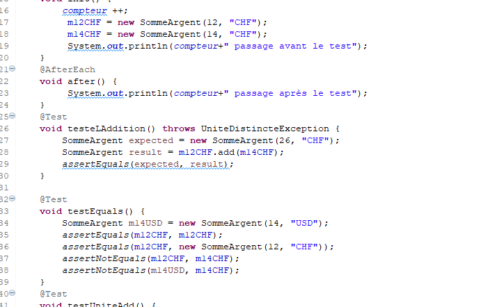
C3 : Administrer des systèmes
Système, Réseau, Linux
| Critères | Non Acquis | En Cours | Acquis |
|---|---|---|---|
| AC 1 : Identifier les composants | Compréhension limitée de l’utilité des composants, confusions fréquentes. | Connaissance des composants principaux (CPU, ALU, RAM…). |
Niveau Atteint Maîtrise de l’utilité de chaque composant et capacité à les situer dans une machine. |
| AC 2 : Utiliser un système multitâches/multi-utilisateurs | Difficultés à exécuter des tâches simples, incompréhension des notions de multitâche et multi-utilisateurs. | Gestion basique des tâches, groupes et utilisateurs. |
Niveau Atteint Utilisation avancée des processus (tâches en fond, récupération des informations, gestion des signaux). |
| AC 3 : Installer et configurer un OS et des outils | Difficulté à installer un système ou à rédiger un guide d’installation. | Installation fonctionnelle du système, configuration partielle des comptes et applications. |
Niveau Atteint Usage du terminal, configuration d’applications avancées et personnalisation du système. |
| AC 4 : Configurer un poste dans un réseau d’entreprise | Difficulté à schématiser les rôles et permissions selon les utilisateurs. |
En Cours Création de rôles et permissions avec quelques erreurs. |
Configuration cohérente des rôles et des droits dans un contexte d’entreprise. |
SAE 2.03 – Services réseau : Ce projet m’a permis de configurer des services réseau sur Linux en utilisant la ligne de commande. J’ai appris à installer, sécuriser et tester différents services (Web, DNS).
R2.05 – TP2 : J’ai configuré un poste de travail au sein d’un réseau existant, en gérant les utilisateurs, les groupes et les droits d’accès.
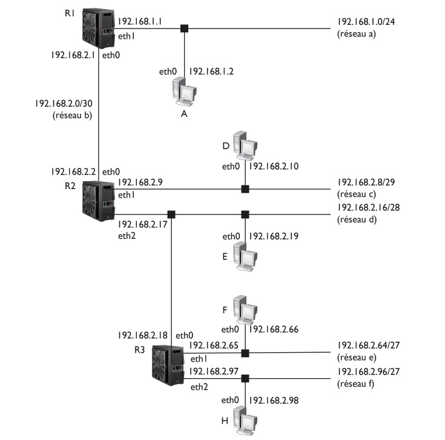
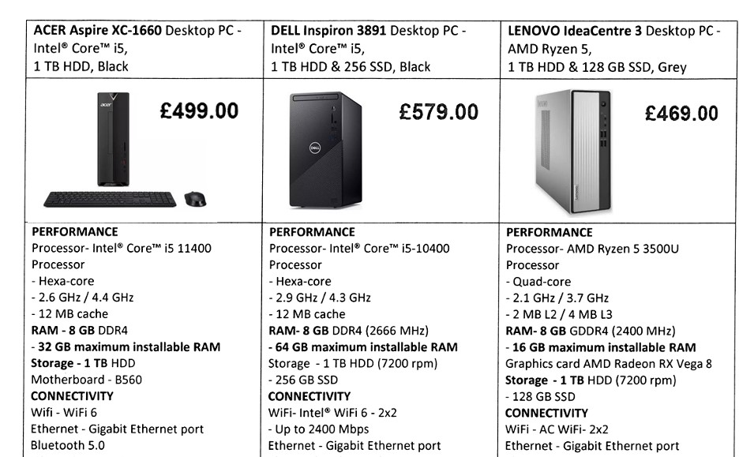
C4 : Gérer des données
SQL, BDD, Modélisation
| Critères | Non Acquis | En Cours | Acquis |
|---|---|---|---|
| AC 1 : Mettre à jour et interroger une base de données relationnelle | Difficultés à utiliser les requêtes appropriées ou à se repérer dans l’interface SQL. | Requêtes fonctionnelles mais parfois trop complexes ou limitées à la mise à jour. |
Niveau Atteint Requêtes concises, intégrant les contraintes (clés étrangères…), avec bonne compréhension de la structure. |
| AC 2 : Visualiser des données | La représentation choisie ne met pas en valeur les informations importantes, la lecture des résultats reste difficile. | Les données sont représentées de façon globalement lisible, même si certains choix de visualisation ne sont pas pleinement adaptés. |
Niveau Atteint Les visualisations sont choisies et construites pour éclairer clairement les indicateurs pertinents et faciliter l’interprétation. |
| AC 3 : Concevoir une base de données relationnelle à partir d’un cahier des charges | La structure proposée ne reflète pas bien les besoins, avec des redondances ou des oublis majeurs. | Le modèle couvre l’essentiel du besoin, mais comporte encore des incohérences ou des choix de modélisation discutables. |
Niveau Atteint Le schéma relationnel traduit de manière organisée le cahier des charges, en limitant les redondances et en respectant les contraintes clés. |
R2.06 – JavaFX et BDD : Dans ce projet, j’ai conçu une interface graphique connectée à une base de données relationnelle. J’ai travaillé sur les requêtes SQL, les jointures et la mise à jour des données depuis l’application.
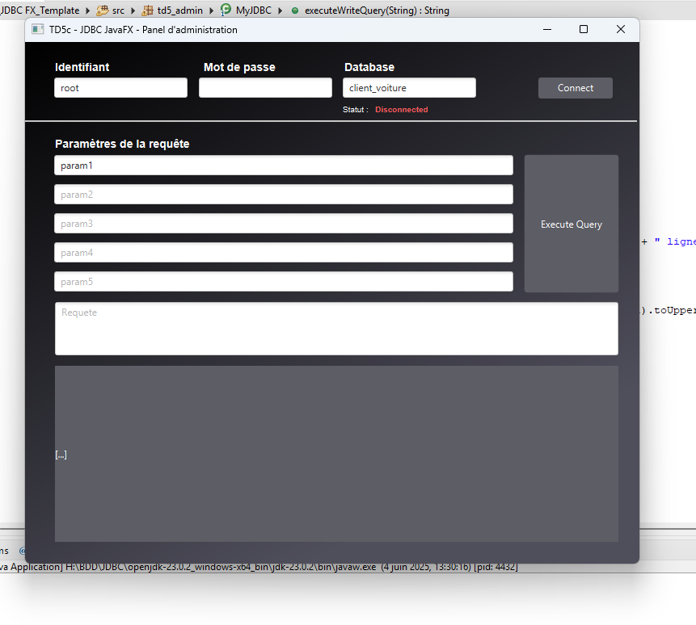
C5 : Conduire un projet
Besoins, Outils, Acteurs
| Critères | Non Acquis | En Cours | Acquis |
|---|---|---|---|
| AC 1 : Appréhender les besoins du client et de l’utilisateur | Le besoin est pris en compte de façon très partielle ; certains enjeux ou contraintes importants ne sont pas identifiés. | Les attentes principales sont comprises et reformulées, mais certains aspects restent flous ou insuffisamment discutés. |
Niveau Atteint Les besoins sont clarifiés avec le client et les utilisateurs, reformulés et priorisés pour guider concrètement le projet. |
| AC 2 : Mettre en place les outils de gestion de projet | Les outils sont peu ou pas utilisés ; le suivi de l’avancement reste informel et difficile à retracer. |
En Cours Quelques outils sont mis en œuvre (planning, suivi des tâches, partage de documents), mais leur usage n’est pas encore régulier. |
Les outils choisis sont adaptés au projet et alimentés tout au long du déroulement, permettant un suivi clair de l’avancement. |
| AC 3 : Travailler l’ergonomie et la satisfaction client | Règles d’ergonomie peu respectées, charte graphique confuse, messages flous. | Ergonomie minimale, charte graphique compréhensible mais perfectible. |
Niveau Atteint Production ergonomique, charte graphique réfléchie et communication fluide. |
| AC 4 : Identifier les acteurs et phases d’un cycle de développement | Difficulté à identifier les acteurs impliqués dans le projet. | Répartition et rôles encore flous. |
Niveau Atteint Analyse des forces/faiblesses de l’équipe et répartition des tâches adaptée. |
| AC 5 : Développer la solution numérique | Tests peu liés aux besoins, résultats non expliqués. | Tests présents mais avec des comportements imprévus restants. |
Niveau Atteint Tests alignés avec les spécifications, corrections appliquées et résultats explicités. |
TP JavaFX – Projet Morpion : Ce projet m’a permis de conduire un mini-cycle de développement complet : analyse du besoin, conception, implémentation et tests, en prenant en compte l'ergonomie.
SAE 2.03 – Gestion de projet : J’ai travaillé à la fois sur la planification (PERT, GANTT) et sur la mise en place technique, reliant ainsi la gestion théorique à la pratique.
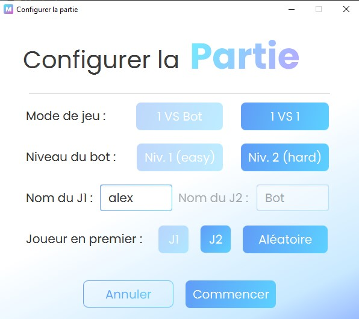
C6 : Collaborer
Équipe, Communication, Rôles
| Critères | Non Acquis | En Cours | Acquis |
|---|---|---|---|
| AC1 : Comprendre l’écosystème numérique | Difficultés à comprendre le fonctionnement de l’écosystème et à s’intégrer dans une équipe. | Identification progressive des interactions, adaptation encore en cours. |
Niveau Atteint Compréhension claire des interactions et collaboration efficace avec l’équipe. |
| AC2 : Identifier les compétences requises | Difficulté à distinguer les secteurs de l’informatique. | Connaissance de certaines compétences sans application systématique. |
Niveau Atteint Maîtrise de la communication en équipe et compréhension des secteurs de l’informatique. |
| AC3 : Statuts, fonctions et rôles | Méconnaissance des statuts et de l’utilité des différents rôles. | Idée générale des responsabilités mais implications encore floues. |
Niveau Atteint Identification précise des rôles et de leur complémentarité. |
| AC4 : Compétences interpersonnelles | Travail en isolement, peu d’interactions avec l’équipe. | Communication présente mais responsabilités parfois mal assumées. |
Niveau Atteint Écoute active, respect des directives et bonne intégration dans l’équipe. |
R1.11 – Bases de la communication : J'ai réalisé des affiches en groupe pour faire passer des messages, ce module m’a aidé à mieux comprendre le rôle de la communication dans les projets informatiques.
C1 : Réaliser un développement d’application
Spécifications, Ergonomie, Conception, Tests
| Critères | Non Acquis | En Cours | Acquis |
|---|---|---|---|
| AC1 : Spécifications fonctionnelles | Les exigences sont peu exploitées : nombreuses zones non analysées, critères oubliés ou mal compris, l’application livrée s’éloigne fortement de la demande. |
En Cours Les exigences principales sont identifiées et traitées, mais certains détails ou contraintes (performance, sécurité) sont négligés. |
Les exigences sont analysées, reformulées si besoin et organisées ; l’application livrée répond clairement aux fonctionnalités attendues. |
| AC2 : Accessibilité & Ergonomie | L’interface gêne l’utilisation : repères visuels insuffisants, navigation confuse, obstacles importants pour certains publics. | L’interface permet de réaliser les tâches, mais certains choix (placement, lisibilité) compliquent l’expérience d’une partie des utilisateurs. |
Niveau Atteint L’interface facilite le parcours : organisation claire, repères visuels cohérents, prise en compte de différents profils d’utilisateurs. |
| AC3 : Bonnes pratiques | La conception est peu formalisée, les responsabilités sont mélangées, le code est difficile à comprendre ou à faire évoluer. | Une structure de conception existe (schémas, séparation partielle), le code est globalement organisé mais comporte encore des zones peu claires. |
Niveau Atteint La conception est argumentée (choix des structures, couches, patterns) et le code est structuré, lisible, factorisé et prêt à être maintenu. |
| AC4 : Qualité par les tests | Les tests sont absents ou improvisés, la détection d’erreurs repose surtout sur l’utilisation ponctuelle de l’application. | Des tests ciblent les cas d’usage principaux, mais certains scénarios ou limites ne sont pas explorés, laissant subsister des défauts. |
Niveau Atteint Les tests sont pensés dès la conception, couvrent les cas usuels et critiques, et sont exploités pour corriger les anomalies. |
En deuxième année, j'ai franchi un cap : je ne code plus "pour que ça marche", mais "pour que ce soit maintenable". L'accent mis sur les spécifications et l'architecture logicielle me permet de produire des applications professionnelles. Je veille désormais systématiquement à la lisibilité de mon code pour mes collaborateurs.
Projet Musicode : Conception et développement complet d'un site web musical avec une base de données PHP. Ce projet m'a appris à respecter des contraintes techniques strictes tout en assurant une architecture robuste.
Shooter Android : Un super projet de jeu de tir sur Android développé en Kotlin qui m'a demandé beaucoup d'investissement et de réflexion sur la structuration du code de jeu.
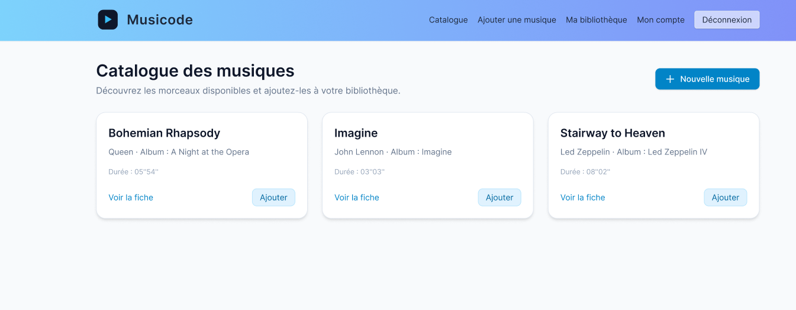

C2 : Optimiser des applications
Structures complexes, Sécurité, Eco-conception
| Critères | Non Acquis | En Cours | Acquis |
|---|---|---|---|
| AC1 : Structures de données complexes | Le même type de structure est utilisé quel que soit le contexte ; l’impact sur les performances ou la clarté n’est pas pris en compte. | Différentes structures sont envisagées et parfois choisies à bon escient, mais sans analyse systématique de leurs avantages et limites. |
Niveau Atteint Les structures de données sont choisies en fonction du problème, avec une justification liée au coût, à la lisibilité et aux besoins d’évolution. |
| AC2 : Algorithmique avancée | Les solutions proposées restent très simples, ignorent la taille des données ou la nature du problème. |
En Cours Certaines techniques plus évoluées sont mobilisées, mais la méthode retenue n’est pas toujours complètement ajustée au problème posé. |
Des méthodes algorithmiques adaptées sont identifiées et appliquées, en tenant compte de la complexité, de la précision et des contraintes. |
| AC3 : Sécurisation | Les risques de sécurité sont peu identifiés, des pratiques fragiles subsistent (exposition de données, contrôles insuffisants). | Les principaux risques sont repérés et quelques mécanismes de protection sont mis en œuvre, parfois de manière partielle. |
Niveau Atteint Les enjeux de sécurité sont pris en compte dès la conception ; des protections adaptées sont choisies et intégrées pour limiter les vulnérabilités. |
| AC4 : Impact env. & sociétal | Les conséquences sur les ressources, les usages ou les personnes ne sont pas vraiment interrogées lors des choix techniques. | Certains effets (consommation, acceptabilité, usages) sont repérés, mais ils ne sont pas toujours pris en compte au moment de décider. |
Niveau Atteint Les choix techniques sont examinés au regard de leurs effets sur l’environnement et les utilisateurs, ce qui oriente la solution retenue. |
J'ai développé une conscience de la "qualité globale". Optimiser ne veut plus dire seulement aller vite, mais aussi consommer moins (éco-conception) et être sûr (sécurité by design). Je m'efforce de choisir la structure de données la plus pertinente pour chaque cas d'usage.
Architecture MVC : Mise en œuvre du pattern Modèle-Vue-Contrôleur pour structurer proprement le code de mes applications web.
TP Canards (Design Patterns) : Exercice pratique en Java sur l'utilisation des Design Patterns pour rendre le code orienté objet plus modulaire et évolutif.
Héritage Objet Kotlin : Apprentissage et implémentation fine de l'héritage entre classes en langage Kotlin, facilitant la réutilisation du code.
Stockage Sécurisé Docker : Projet axé sur la sécurité consistant à stocker des mots de passe de manière complètement sécurisée grâce aux Docker Secrets.
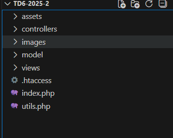
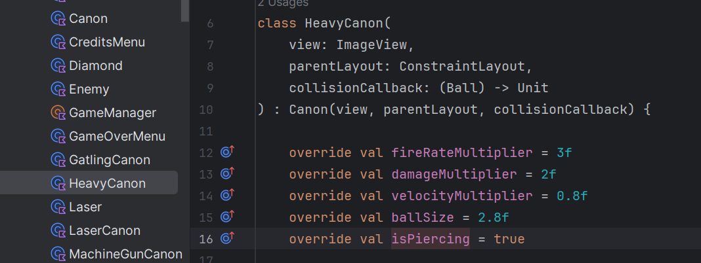
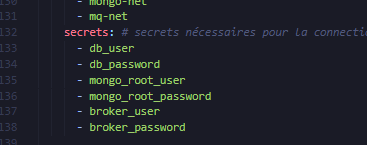
C3 : Administrer des systèmes complexes
Composants, Multitâches, Réseau
| Critères | Non Acquis | En Cours | Acquis |
|---|---|---|---|
| AC1 : Identifier les composants | La distinction entre composants matériels, logiciels et services réseau reste floue, les rôles sont difficilement expliqués. | Les principaux éléments sont reconnus et globalement associés à leur fonction, avec encore quelques zones d’ombre. |
Niveau Atteint Les différentes briques (composants physiques, OS, services, réseaux) sont identifiées et situées dans l’architecture globale du système. |
| AC2 : Système multitâches | Les actions restent limitées aux usages les plus simples ; la gestion des processus, des utilisateurs ou des droits est peu maîtrisée. |
En Cours Les fonctionnalités principales sont utilisées (installation, gestion de fichiers), avec parfois des erreurs ou des hésitations. |
Le système est utilisé de manière structurée : gestion des comptes, des droits, des processus et des ressources en cohérence avec le contexte. |
| AC3 : Installation & Config | L’installation ou la configuration échoue souvent ou nécessite une assistance constante ; la compréhension des étapes reste faible. | L’installation est menée à son terme avec quelques ajustements guidés ; une partie des outils est correctement configurée. |
Niveau Atteint Le système et les outils de développement sont installés, paramétrés et vérifiés de manière autonome, en tenant compte de la besoins du projet. |
| AC4 : Réseau entreprise | Le poste ne s’intègre pas correctement au réseau (adresse, services, sécurité) et les paramètres sont peu maîtrisés. | Le poste peut rejoindre le réseau et utiliser les services essentiels, même si certains réglages restent approximatifs. |
Niveau Atteint La configuration permet une intégration cohérente au réseau (adresses, services, politiques de sécurité) en lien avec les règles de l’organisation. |
Je suis capable de gérer un parc informatique complexe. L'administration système n'est plus un mystère : je sais installer, configurer et sécuriser des postes dans un environnement d'entreprise exigeant, en comprenant parfaitement ce qui se passe sous le capot.
Sécurisation Serveur (Iptables) : TP complet de conception d'un serveur web sécurisé. J'ai mis en place des restrictions d'accès précises et configuré le pare-feu Iptables pour protéger l'infrastructure.
Infrastructure Docker : Projet exigeant sur Docker demandant d'implémenter et de faire interagir une grande diversité de services interconnectés entre eux.
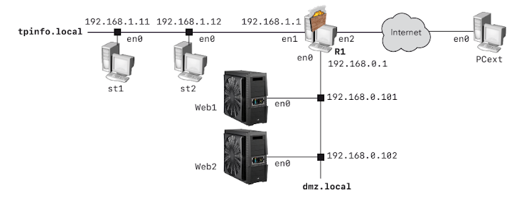
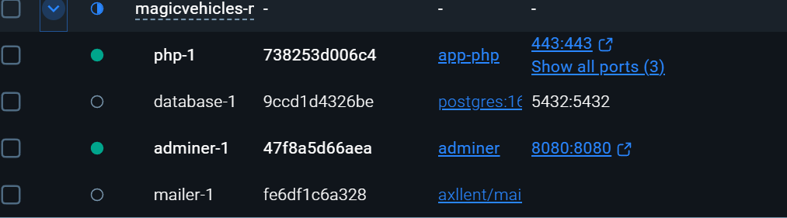
C4 : Gérer des données
Requêtes, Visualisation, Conception BDD
| Critères | Non Acquis | En Cours | Acquis |
|---|---|---|---|
| AC 1 : Mettre à jour et interroger une base de données relationnelle | Les requêtes produisent des résultats erronés ou incomplets, les opérations de mise à jour sont hésitantes ou risquées. | Les requêtes couvrent les principaux besoins, mais certaines manipulations (jointures, conditions, mises à jour) restent fragiles. |
Niveau Atteint Requêtes concises, intégrant les contraintes (clés étrangères…), avec bonne compréhension de la structure. |
| AC 2 : Visualiser des données | La représentation choisie ne met pas en valeur les informations importantes, la lecture des résultats reste difficile. | Les données sont représentées de façon globalement lisible, même si certains choix de visualisation ne sont pas pleinement adaptés. |
Niveau Atteint Les visualisations sont choisies et construites pour éclairer clairement les indicateurs pertinents et faciliter l’interprétation. |
| AC 3 : Concevoir une base de données relationnelle à partir d’un cahier des charges | La structure proposée ne reflète pas bien les besoins, avec des redondances ou des oublis majeurs. |
En Cours Le modèle couvre l’essentiel du besoin, mais comporte encore des incohérences ou des choix de modélisation discutables. |
Le schéma relationnel traduit de manière organisée le cahier des charges, en limitant les redondances et en respectant les contraintes clés. |
Ma gestion des données est devenue professionnelle. Je conçois des bases robustes qui évitent la redondance et je sais extraire l'information pertinente pour la prise de décision. Les requêtes complexes ne me font plus peur.
Blog Dynamique : Développement d'une plateforme de blog utilisant une base de données relationnelle pour la gestion et l'affichage dynamique des articles.
Découverte NoSQL (MongoDB) : Travaux Dirigés axés sur l'utilisation de bases de données orientées documents (NoSQL), offrant une alternative flexible aux modèles relationnels classiques.
Collection MongoDB Restaurants : Exercice concret d'interrogation et de gestion de la donnée sur une collection NoSQL simulant des enregistrements de restaurants.
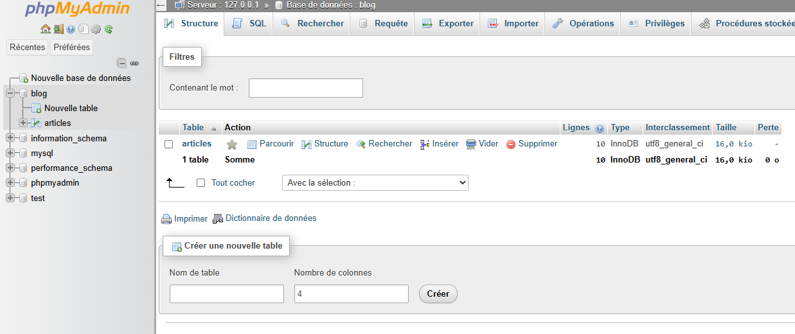
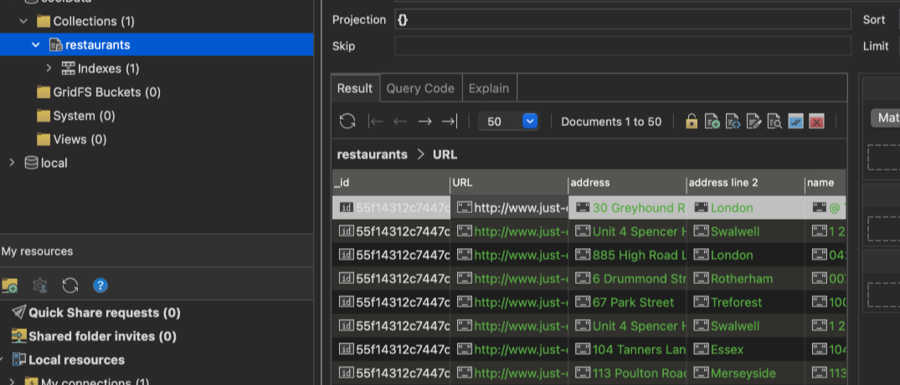
C5 : Conduire un projet
Besoins, Outils, Acteurs
| Critères | Non Acquis | En Cours | Acquis |
|---|---|---|---|
| AC 1 : Appréhender les besoins du client et de l’utilisateur | Le besoin est pris en compte de façon très partielle ; certains enjeux ou contraintes importants ne sont pas identifiés. | Les attentes principales sont comprises et reformulées, mais certains aspects restent flous ou insuffisamment discutés. |
Niveau Atteint Les besoins sont clarifiés avec le client et les utilisateurs, reformulés et priorisés pour guider concrètement le projet. |
| AC 2 : Mettre en place les outils de gestion de projet | Les outils sont peu ou pas utilisés ; le suivi de l’avancement reste informel et difficile à retracer. |
En Cours Quelques outils sont mis en œuvre (planning, suivi des tâches, partage de documents), mais leur usage n’est pas encore régulier. |
Les outils choisis sont adaptés au projet et alimentés tout au long du déroulement, permettant un suivi clair de l’avancement. |
| AC 3 : Identifier les acteurs et les phases d’un cycle de développement | Les intervenants et les étapes du projet sont confondus ou mal situés, la progression du cycle est peu lisible. | Les principaux acteurs et phases sont reconnus, mais certains rôles ou enchaînements restent approximatifs. |
Niveau Atteint Les acteurs sont clairement identifiés, les phases du cycle de développement sont distinguées et reliées aux activités menées. |
Je maîtrise le cycle de vie d'un projet. Je sais dialoguer avec un client pour comprendre son vrai besoin (pas seulement ce qu'il dit vouloir) et utiliser les outils adaptés pour garder le cap et respecter les délais.
24h du Code (Chatbot Cali) : Participation au hackathon des 24h du code au Mans. Conception en équipe d'un Chatbot IA, nécessitant une organisation rigoureuse et une gestion du stress.
Mission Alternance : Reprise et pilotage d'une application industrielle existante. Gestion des plannings, communication avec le personnel de l'entreprise et déplacements sur le terrain pour comprendre les besoins réels.
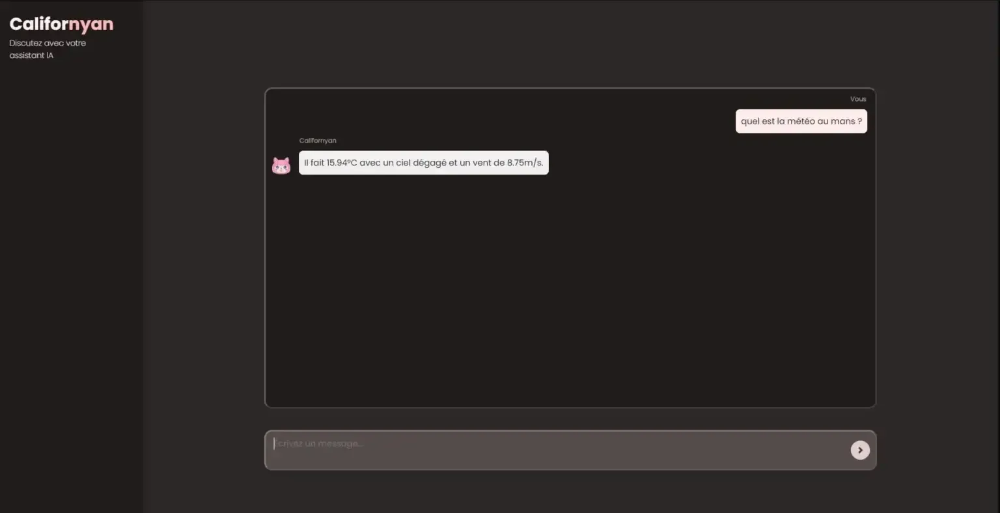
C6 : Collaborer
Écosystème, Intégration, Compte-rendu
| Critères | Non Acquis | En Cours | Acquis |
|---|---|---|---|
| AC1 : Comprendre la diversité, la structure et la dimension de l’informatique dans une organisation | La variété des structures et des métiers est peu perçue, la place de l’informatique reste vague. |
En Cours Les grandes formes d’organisation et quelques fonctions types sont identifiées, sans vision globale très précise. |
Les différents modes d’organisation et les principaux métiers sont situés, avec une compréhension de leurs interactions. |
| AC2 : Appliquer une démarche pour intégrer une équipe informatique | La posture d’intégration est peu préparée ou peu adaptée. | Une démarche d’intégration est amorcée, mais manque encore de structure ou de continuité. |
Niveau Atteint Une démarche structurée est mise en œuvre pour comprendre le fonctionnement de l’équipe et trouver progressivement sa place. |
| AC3 : Mobiliser les compétences interpersonnelles pour intégrer une équipe | La communication est irrégulière ; la coopération reste limitée, les retours sont rarement sollicités. | Les échanges sont présents et globalement respectueux, mais pas toujours anticipés ou ajustés. |
Niveau Atteint La communication est constructive, à l’écoute des autres, et favorise la coopération et la résolution collective de difficultés. |
| AC4 : Rendre compte de son activité professionnelle | Le travail réalisé est peu documenté ou communiqué ; les autres ont du mal à comprendre l’avancement. | Des comptes rendus sont fournis, mais de manière ponctuelle ou partiellement détaillée. |
Niveau Atteint L’activité est partagée de manière régulière et structurée, facilitant le suivi par l’équipe et le responsable. |
Je suis prêt à intégrer une entreprise. Je comprends les codes du monde professionnel, je sais communiquer sur mon avancement de manière claire et structurée, et m'intégrer efficacement dans une équipe existante.
Méthode Agile & Scrum : Application concrète des méthodes agiles dans mes projets de groupe. Utilisation de Sprint Backlogs pour répartir les tâches et assurer un suivi professionnel de l'avancement en équipe.
Tests Qualité League of Legends : Projet de groupe axé sur le test qualité (QA) logiciel. Exercice de définition de plans de test et de restitution pour simuler la mise à jour d'un cas concret.
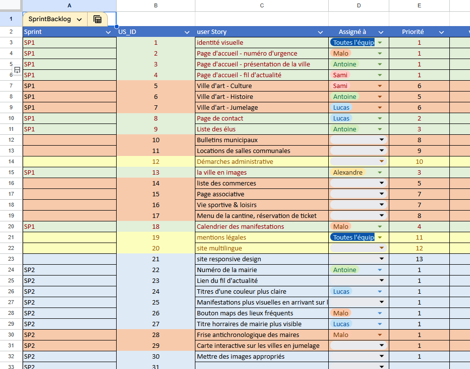
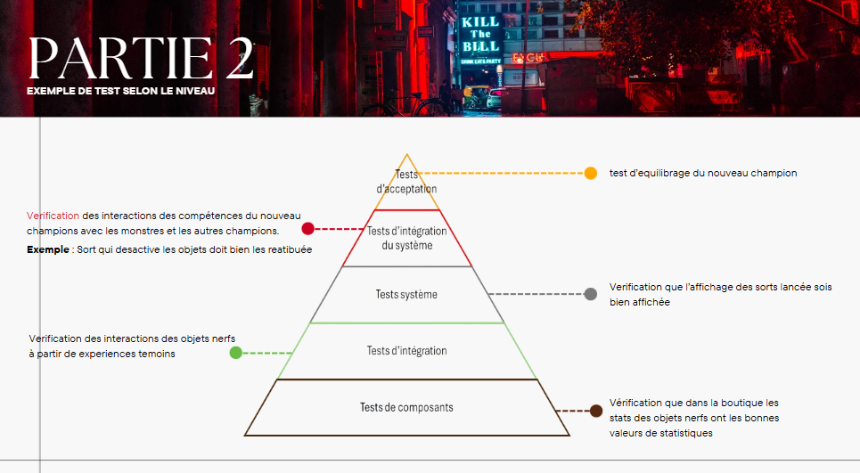